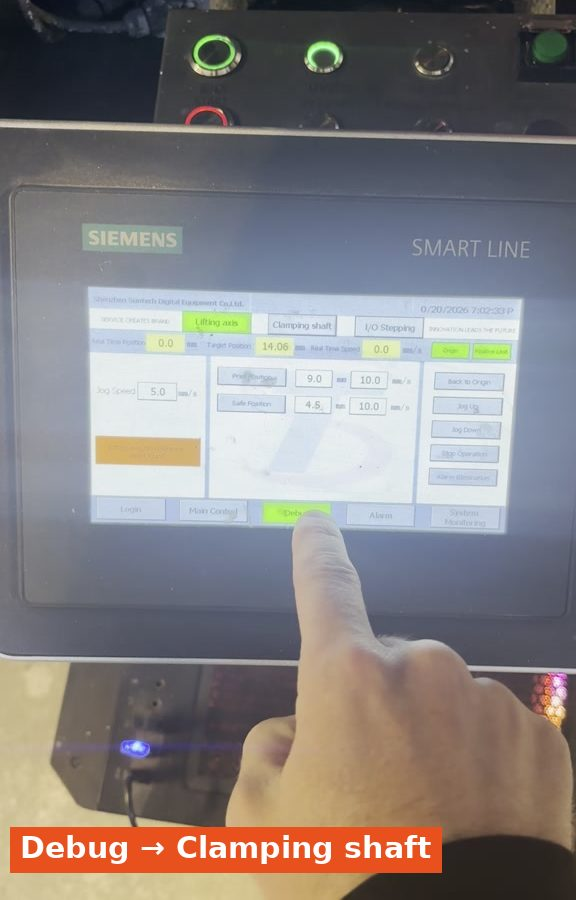
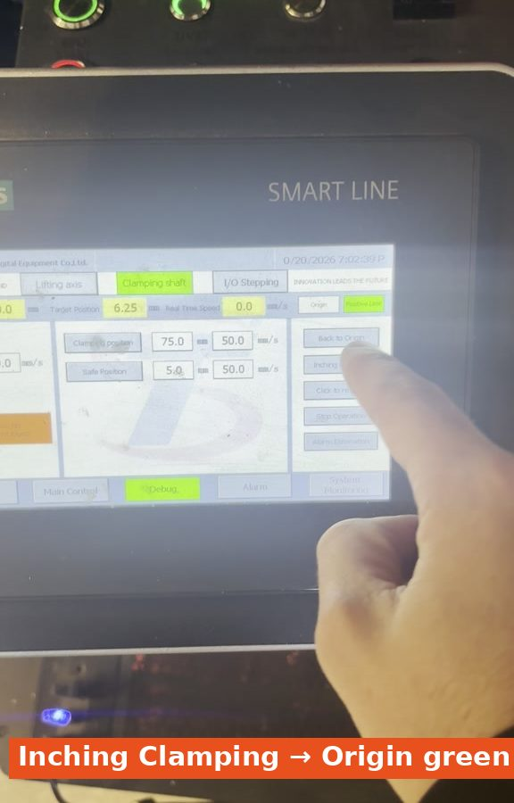
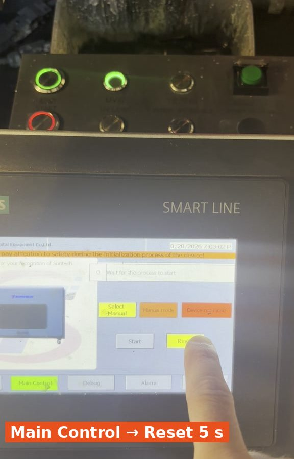
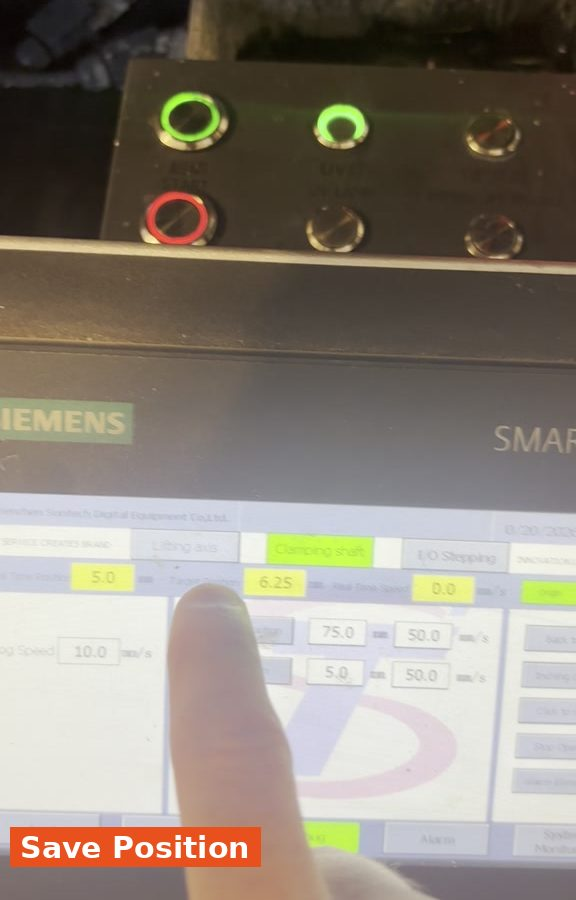
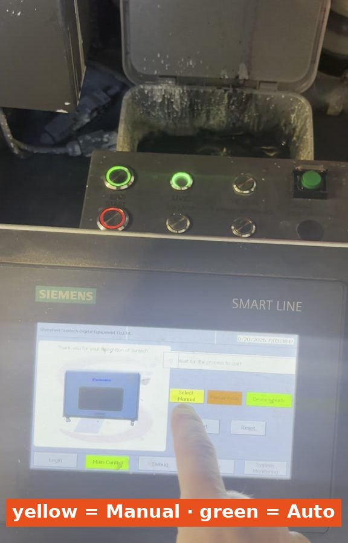
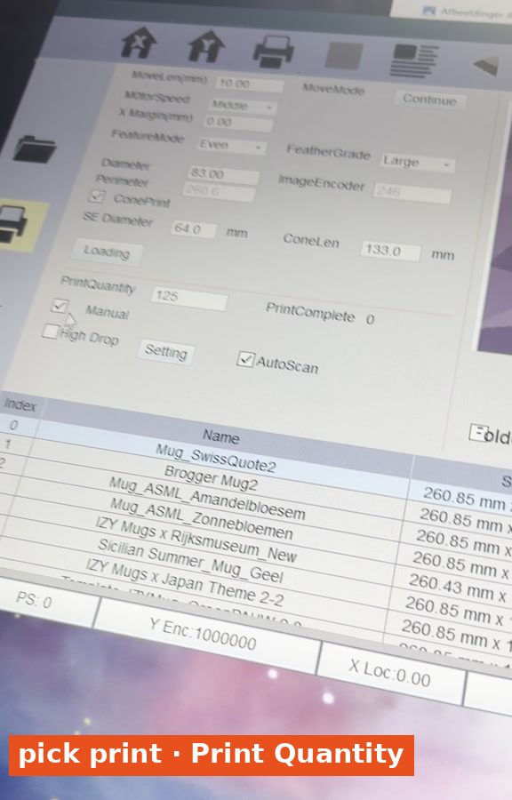
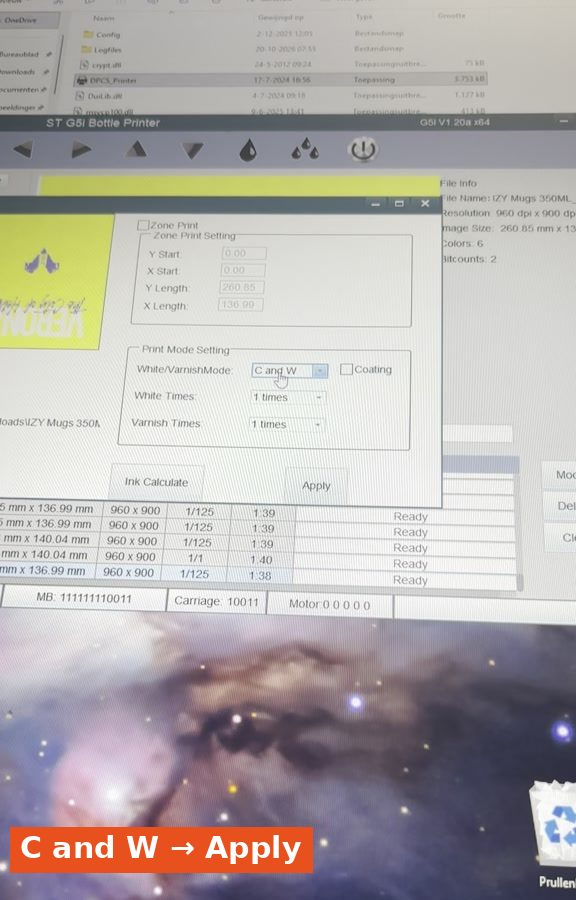
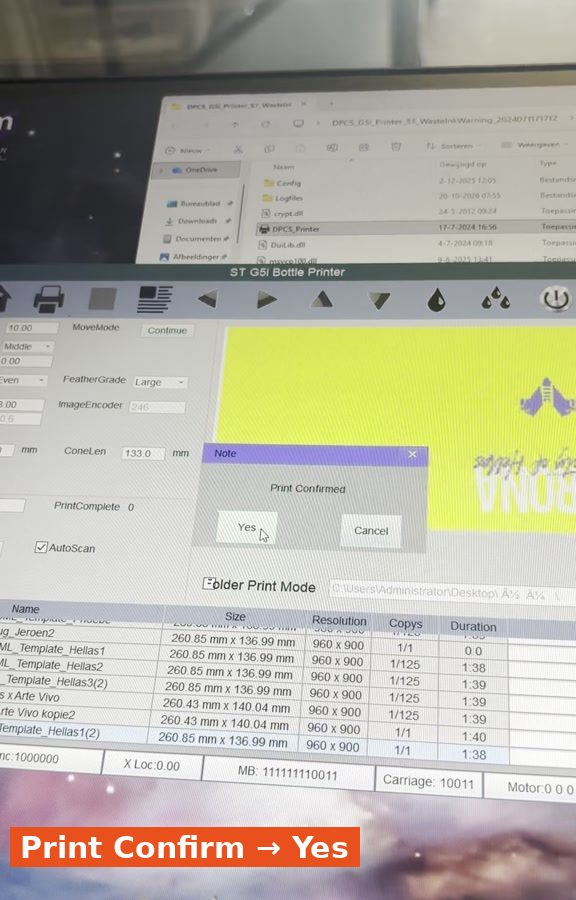

How to get the mug printer (Mug 1) ready and print an order. Do part 1 first: starting the printer. Note: the preparation on the Siemens screen differs from the bottle printers.
1
Home the clamping shaft
On the Siemens screen, tap System Login.
Tap Debug and go to Clamping shaft.
Press Inching Clamping until Origin turns green.
System Login.

Debug → Clamping shaft.

Inching Clamping until Origin is green.
2
Raise the lifting axis
Go to Lifting Axis.
Press Jog Up briefly, really only 1–2 seconds.
Check that Origin and Positive limit are green.
Lifting Axis → Jog Up 1–2 sec.
3
Reset the machine
Go to Main Control.
Hold Reset for 5 seconds.
An orange bar appears and the machine moves.
The red indicator switches to green: Device is Ready. Then it is ready.

Main Control → Reset 5 sec.Green: Device is Ready.
4
Save the positions
Go back to Debug → Clamping shaft and press Save Position.
Go to Lifting Axis and also press Save Position.
The machine is now in the right position to load a mug.

Save Position.
5
Choose: manual or automatic
Manual
Leave the button on the Siemens screen yellow. Tick Manual in the print software.
Automatic
Press the yellow button so everything turns green. Untick Manual in the print software.

Yellow = Manual, green = automatic.
6
Set up the print file
Pick the right print file in the print software.
Click Modify, set C and W and click Apply.
Enter the number of mugs to print in Print Quantity.

Pick print, fill in Print Quantity.

Modify → C and W → Apply.
7
Start printing
Click the Print button, then Yes.

Print Confirm → Yes.
8
Load the mug and START
For automatic printing:
Place the mug in the printer with your finger on the screw thread.
Find the right position yourself, so the cap ends up at the front.
Press the green START button on the machine. The mug is printed.